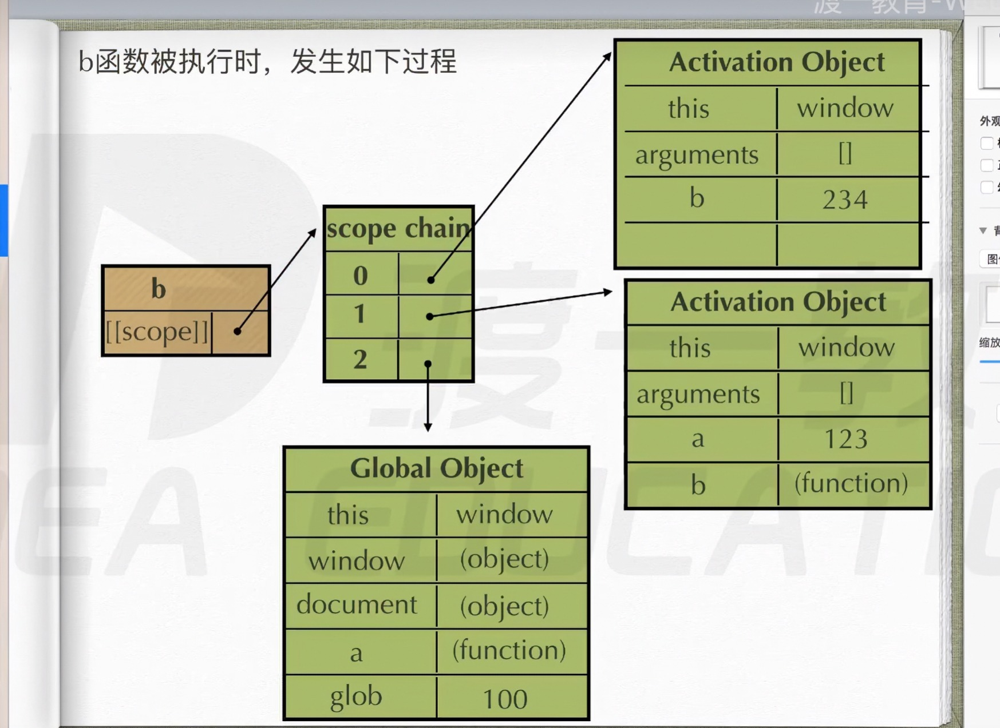
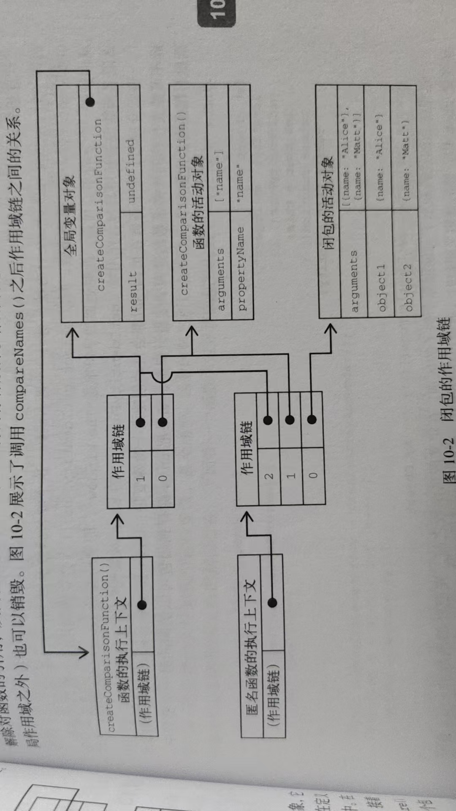

它是以 Activation Object的负责存储变量 和 链接外层作用域 的逻辑 组成了词法环境 , 比Activation包含的更全面 词法环境就是: 环境记录 + 外部环境引用
它包含了 全局 局部 块级 作用域 也可以说js中所有常见的作用域都遵循词法作用域的规则 , 整个作用域体系都是靠词法作用域撑起来的
匿名函数 经常被人误认为是闭包 , 闭包指的是那些引用了另一个函数作用域中变量的函数 , 通常就是在嵌套函数中实现的 下面的代码
function createComparisonFunction(propertyName) {
return function (object1, object2) {
let value1 = object1[propertyName]
let value2 = object2[propertyName]
if (value1 > value2) {
return 1
} else if (value1 < value2) {
return -1
} else {
return 0
}
}
}
这里加粗的代码位于返回的内部函数中 其中引用了外部函数的变量 prototypeName 在这个内部函数被返回并在其他地方被使用后 它依然引用这那个变量 这个因为内部函数的作用域链包含 createComparisonFunction() 函数的作用域
在调用一个函数时 , 会为这个函数调用创建一个执行上下文 并创建一个作用域链 然后用argument 和 其他命名参数来初始化这个函数的活动对象 外部函数的活动对象是内部函数作用域链上 的第二个对象 这个作用域一直向外串起了所有包含函数的活动对象 直到全局执行上下文才停止 子作用域找变量，先查自己的 “局部仓库”（AO），找不到就去父作用域的 “仓库”（父 AO）， 再找不到就去爷爷的、太爷爷的…… 直到全局 “仓库”（全局对象），找不着就报错。
在函数执行时 要从作用域链中查找变量 , 以便读 , 写值 , 如下
function compare(value1, value2) {
if (value1 > value2) {
return 1
} else if (value1 < value2) {
return -1
} else {
return 0
}
}
这里定义的compare() 函数是 在全局上下文中调用的 , 第一次调用 compare() 会为它创建一个包含 argument value1 value2 的活动对象 , 这个对象是其 作用域链上的第一个对象,而全局作用域上下文的变量对象则是 compare() 作用域链上的第二个对象 其中包含 this result compare
好像之前讲过昂 还讲 算了复习复习 函数执行时，每个执行上下文中都会有一个包含其中变量的对象(就是AO活动对象) 全局上下文中的叫变量对象,会在代码执行期间始终存在。(也就是GO全局对象) 而函数局部上下文中的叫活动对象，只在函数执行期间存在。在定义compare()函数时，就会为它创建作用域链，预装载全局变量对象，并保存在内部的[[Scope]]中(之前的那张图有 ) 在调用这个函数时，会创建相应的执行上下文,然后通过复制函数的[[Scope]]来创建其作用域链 (把AO推进作用链里面) 在这个例子中，这意味着comparel函数执行上下文的作用域链中有两个变量对象 局部变量对象和全局变量对象。作用域链其实是一个包含指针的列表，每个指针分别指向一个变量对象，物理上并不会包含相应的对象。
函数内部的代码在访问变量时，就会使用给定的名称从作用域链中查找变量。函数执行完毕后,局部活动对象会被销毁 内存中就剩下全局作用域了 不过闭包就不一样
在一个函数内部定义的函数会把其包含函数的活动对象添加到自己的作用域链中。因此,在atecomparisonFunction()数中，匿名数的作用域链中实际上包含createcomparisongmction()的活动对象。 说白了: 就是子函数的作用域链有父函数的活动对象 (AO)
let compareName = createComparisonFunction('name')
let result = compareName({ name: 'Alice' }, { name: 'Matt' })
console.log(result); -1
在 createComparisonFunction()返回匿名的数后，它的作用域链被初始化为包含 createcomparisonFunetion()的活动对象和全局变量对象 (匿名函数包含createComparisonFunction对象的活动对象), 这样匿名函数就可以访问到createcomparisonFunction()可以访问的所有变量。 注意这里 ! ! ! 另一个有意思的副作用就是，createcomparisonFunction()的活动对象并不能在它执行完毕后销毁，因为匿名函数的作用域链中仍然有对它的引用。 在create-comparisonFunction()执行完毕后，其执行上下文的作用域链会销毁， (作用域链没回收了) ，但它的活动对象仍然会保留在内存中，直到匿名函数被销毁后才会被销毁
// 创建比较函数
let compareNames = createComparisonFunction('age')
// 调用函数
let Result = compareNames({ age: 17 }, { age: 16 })
console.log(Result);
// 解除对函数的引用 , 这样就可以释放内存了 不会照成闭包了
compareNames = null
这里 , 创建的比较函数被保存在变量的 compareNames 所以此时的propertyName 的引用在 compareNames 上 照成了闭包 把 compareNames 设置成为 null 解除对函数的引用 , 这样一来 , 垃圾回收机制可以把内存给释放掉 , 作用域链也会被销毁 , 其他作用域 (当然全局作用域是不可能销毁的) 也是可以进行销毁的 看看下面的图
注意 因为闭包会保留他们包含函数的作用域 所以比其他函数更占用内存 过度使用闭包很可能导致内存过渡占用 因此仅在十分必要的时候才使用闭包